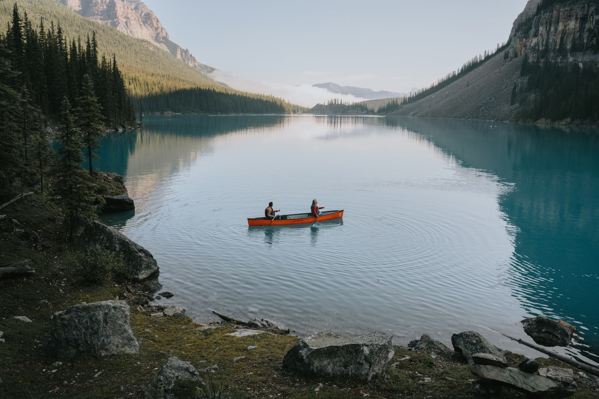
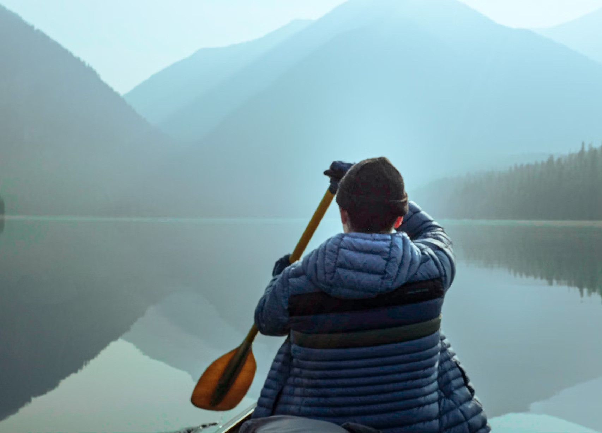

Water-Based Activites
Water-based activities take pace on Lochquarry itself and are supervised by our trained instructions.
Kayaking



Have a go at paddling, rolling and rafting in one of our modern kayaks. Maximum gropu size:8. Suitable for ages 8 and above.
Canoeing

Work independently or in pairs to canoe along Lochquarry. YOu can also explore some of the Loch's islands.
Powerboating


Take control of one of the Centre's powerboats and learn basic powerboating skills. Maximum group size 6. Suitable for ages 12 and above.
Customer Reviews
The outdoor centre is the best place to go on summer and akso in winter. it is good for both individual and group activities, not only for adults but also for young people.
Very best experience at lochquarry outdoor centre. we keep coming to enjoy allt he outdoor activities with our kids next year too.
Learn more about water-based activities at Water activities